Reef Immersion Stops — The Circuit
These ten stops represent the most immersive, vibrant, and unforgettable underwater environments along the Panama–Belize loop — nine reef systems and one extraordinary upriver canyon that earns its place on any short list.
Lighthouse Reef Atoll
Summit immersion. The blue turns electric, visibility stretches wide, and the reef edge drops away into depth just beyond your fins. You hover on that boundary and feel weightless — pure Caribbean clarity meeting open ocean.
Turneffe Atoll
Massive footprint and constant variety. One session glassy inside the lagoon, the next deeper and more dramatic along the outer edge — an atoll that stays fresh day after day because the terrain keeps changing.
Glover's Reef
Atoll-lagoon snorkeling that rewards time in the water. Coral heads rising like scattered islands, pale sand flats glowing in turquoise light, visibility that makes every movement feel suspended in open air.
South Water Caye
Classic barrier reef immersion. Spur-and-groove formations carve the seafloor into natural swim lanes. When the water settles into its calm windows, visibility stretches wide and the reef unfolds in organized, living architecture.
Río Dulce Canyon
Not reef snorkeling — something stranger. Three-hundred-foot limestone walls, howler monkeys in the canopy, thermal springs seeping through cliff faces, West Indian manatees in El Golfete. Immersion of a different kind entirely.
Roatán
Big reef structure and deep relief. Massive coral formations rise like underwater cliffs. Light fades gradually as you peer over the edge. The contrast between reef face and open cobalt creates a constant sense of movement and scale.
Guanaja — Bay Islands
Quiet, clean immersion. Morning light cuts deep into impossibly clear water. Coral throws crisp shadows across pale sand. Your only soundtrack is your breathing and the soft hiss of fins through glassy blue.
Little Corn Island
Endurance-friendly immersion. The reef stays present and textured beneath you, and time dissolves. No roads, no vehicles, one reef — fishing families who have worked it for generations without anyone documenting what they know.
Cahuita Reef
Steady, balanced, rhythmic. A reef that lets you settle into your breathing and stay there — where time softens, distance disappears, and snorkeling becomes something closer to meditation than recreation.
Escudo de Veraguas
Feels like snorkeling inside a living aquarium the world forgot. Impossibly clear. No crowded mooring fields. No parade of tour boats. Anchor down, fins on, and long unhurried passes across reef systems that reward patience.
Lighthouse Reef


Turneffe Atoll
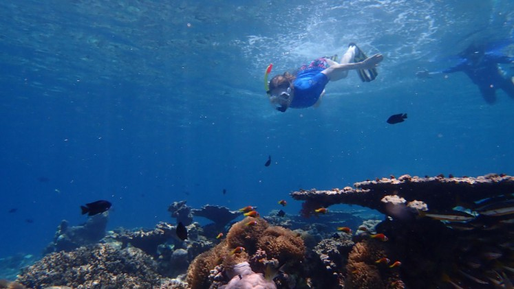
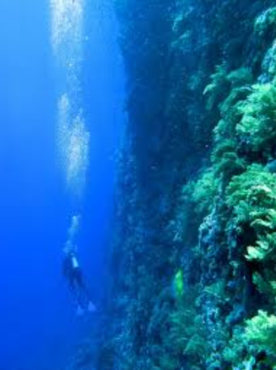
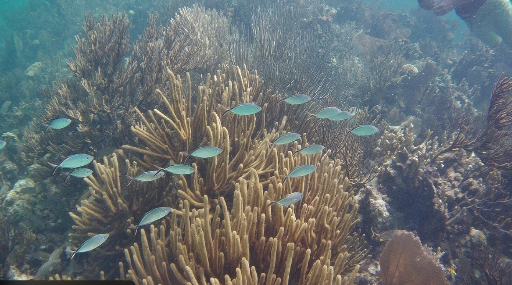
Glover's Reef
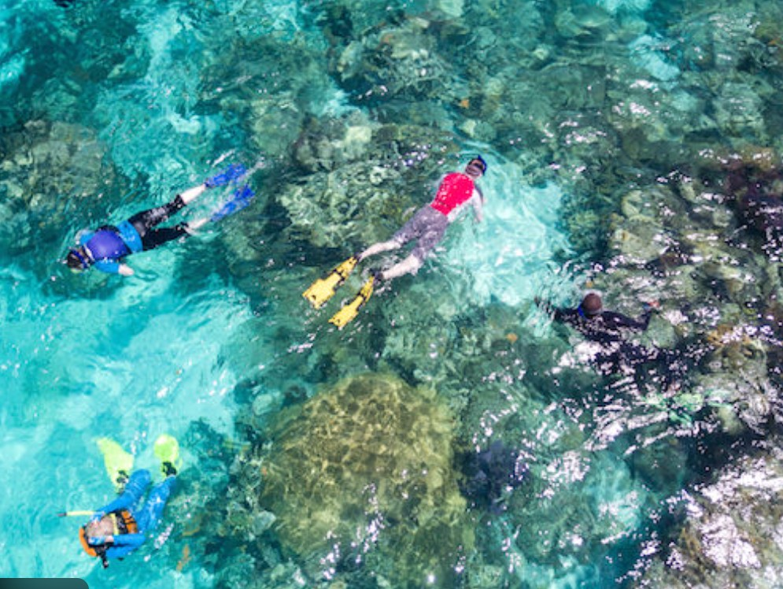

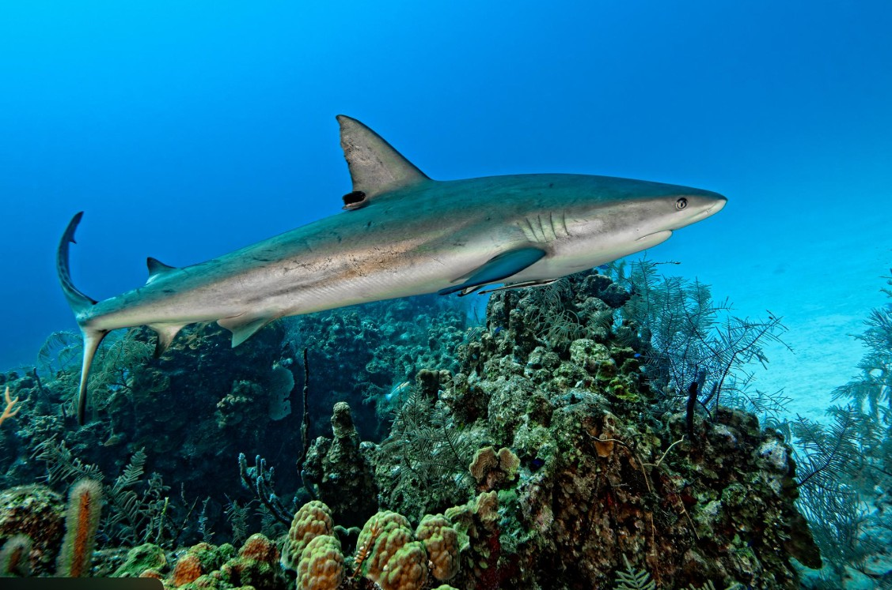
South Water Caye
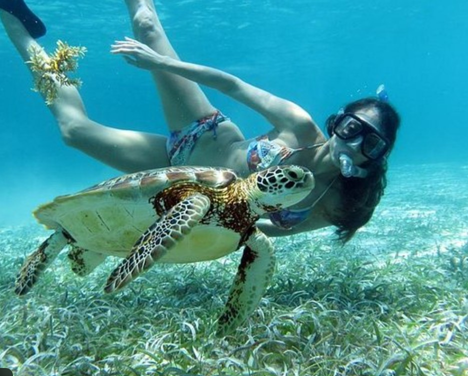
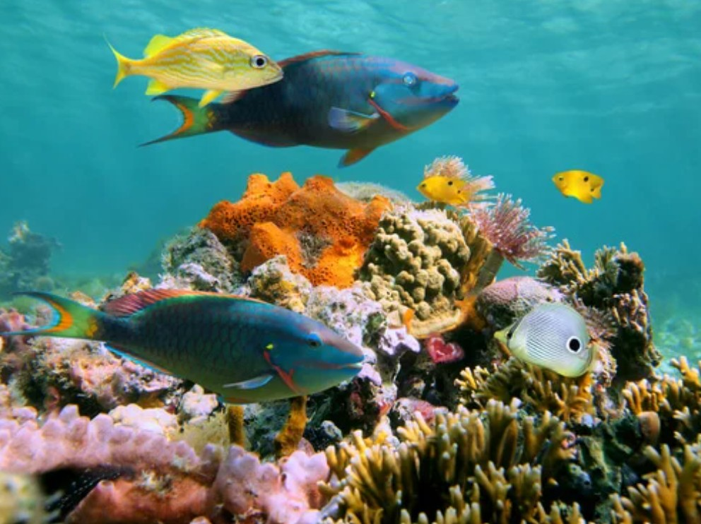
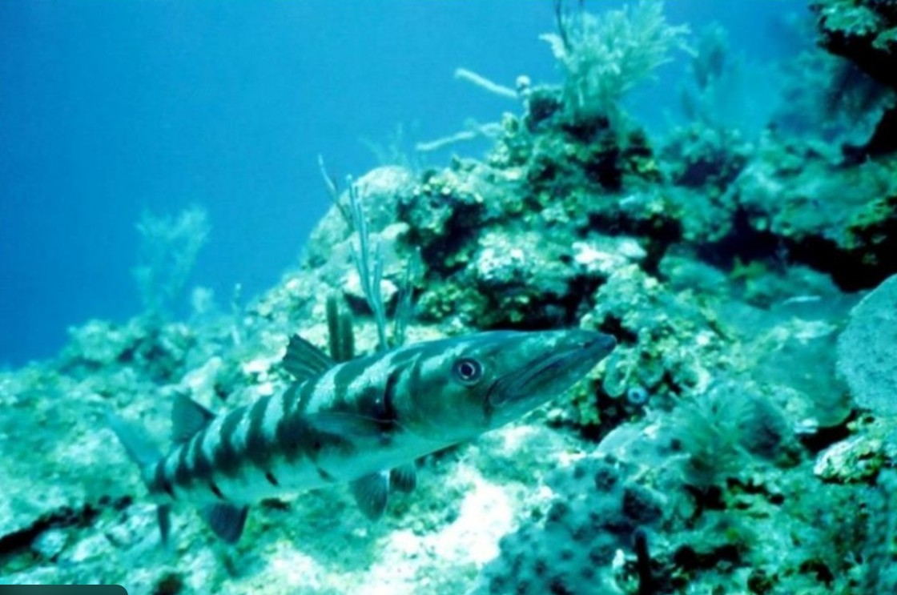
Río Dulce


Roatán


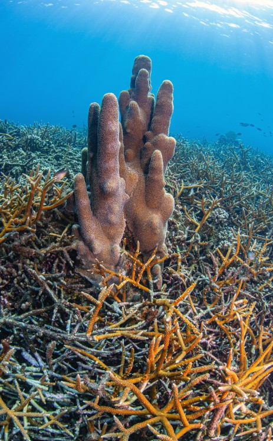
Guanaja

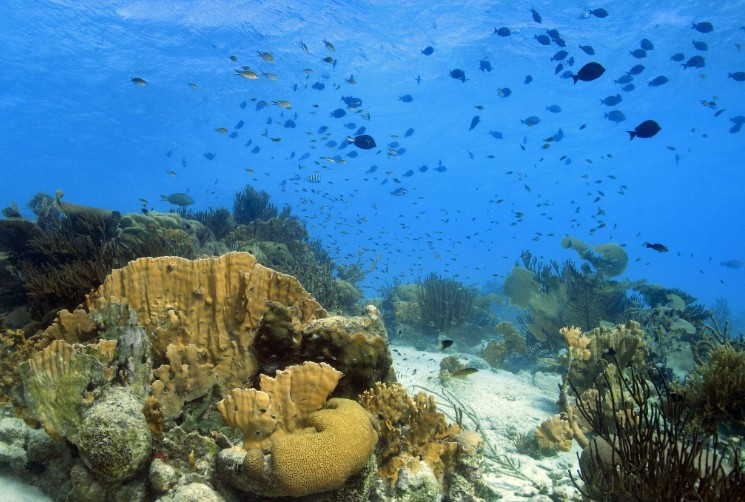
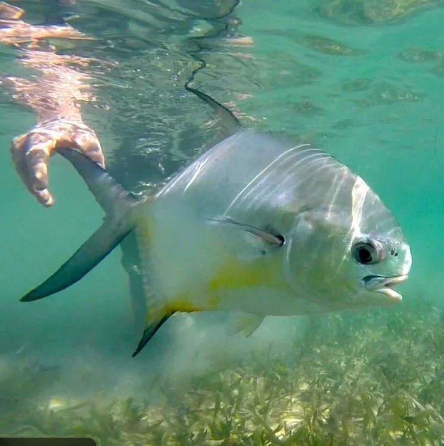
Little Corn Island


Bocas del Toro


Guna Yala
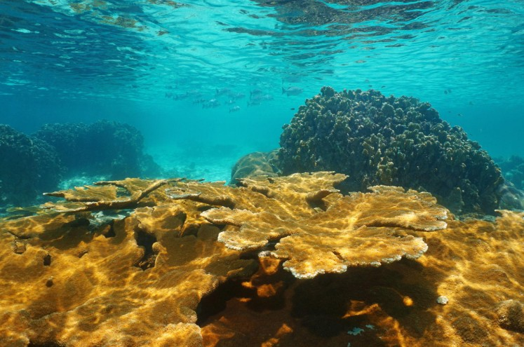
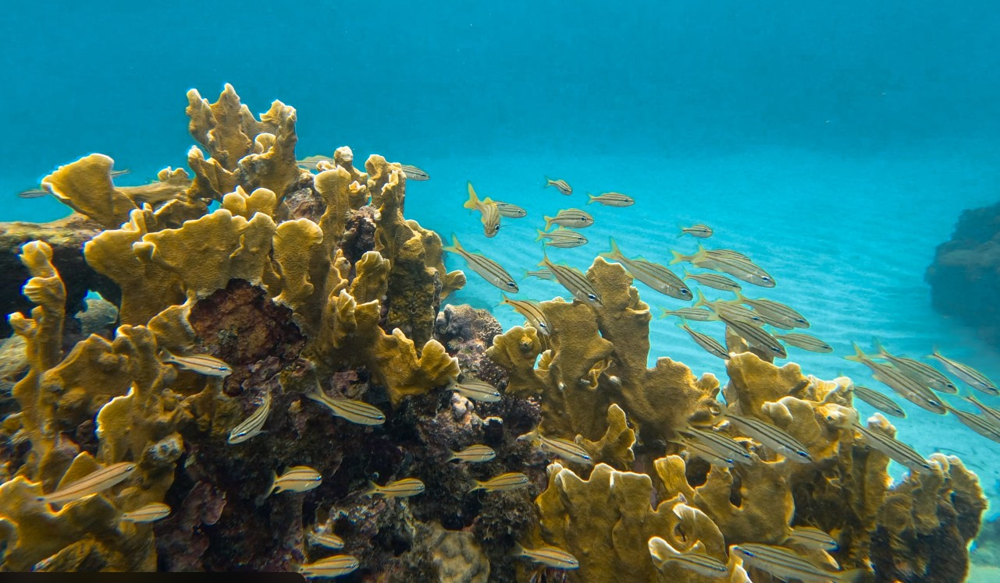

The Rim Runner™ — Storm-Born Ritual
What the Mint Julep is to horse racing, Bourbon Storm™ is to the yachting community. Born on a blue-sky equatorial Pacific day in 1984 that turned dark, wet, and alive — then cleared just as fast. The recipe remained private for forty-one years. In 2025, it's finally being shared.
Glass & Rim
Heavy straight-sided rocks glass with a blue rim band. Rim mix: 2 parts coarse sea salt, 1 part sugar. Lightly wet the outside rim with lime and dip. Fill with fresh ice.
Equatorial Blue Base
1½ oz white rum • ¾ oz blue curaçao • 1 oz pineapple juice • ½ oz fresh lime juice • 1 oz coconut water • 1–2 dashes ginger or aromatic bitters. Shake with ice ~10 seconds. Strain over fresh ice.
Dark Storm Cloud — The Float
½–¾ oz dark rum, gently floated over the back of a bar spoon to form a dark band on top. Blue below. Dark above. Salt and sky at the rim.
Bourbon Storm™ Variation
Same blue base. Float ½–¾ oz bourbon instead of dark rum. The bourbon is the star — the first nose, first sip, and finish live in that layer.
Rim Runner™ Zero
Pineapple juice, coconut water, orange juice, lime, blue curaçao syrup (NA). Float iced tea or cola as the storm band. Not since the Shirley Temple has a non-alcoholic drink carried this much story.
Second: "Better beachy than busted." | Empty glass: one tap. "Anchor down."

Rim Runner™ • Born in a Pacific squall, 1984
Come Join The Rim Run™
The Rim Run™ is a seasonal chapter of Blue Rim 5™ — a real sailing rhythm between Panama and Belize where days are built around competence, immersion, and shared effort. This is not a packaged tour. It's a moving life: sail, anchor, swim, explore, repeat.
Come for a week. Come for a month. If the rhythm fits and the standards feel right, it can evolve. The best matches out here are built on trust, earned confidence, and the quiet electricity of doing hard things well — together.
Reach out: [email protected]